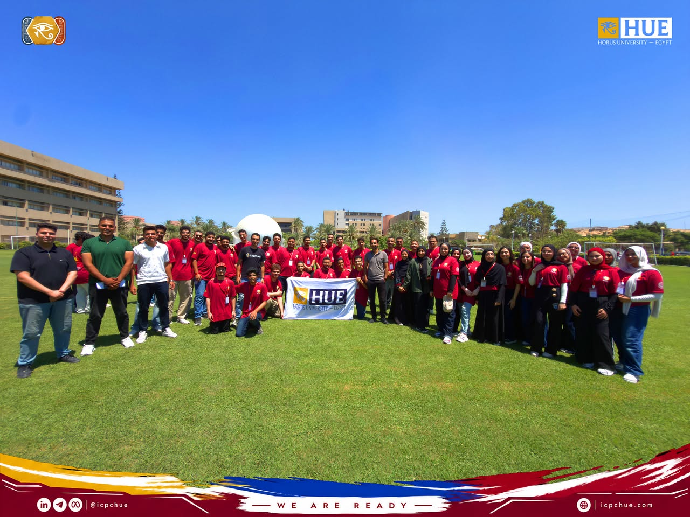
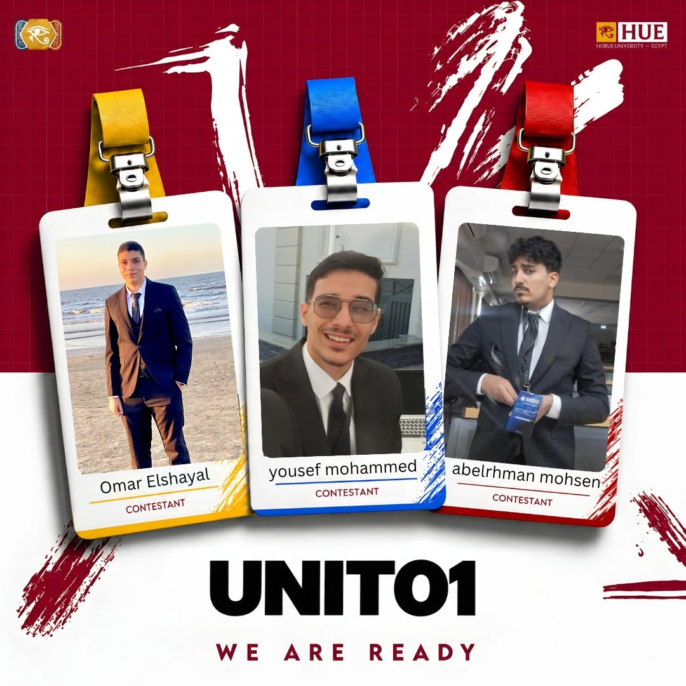
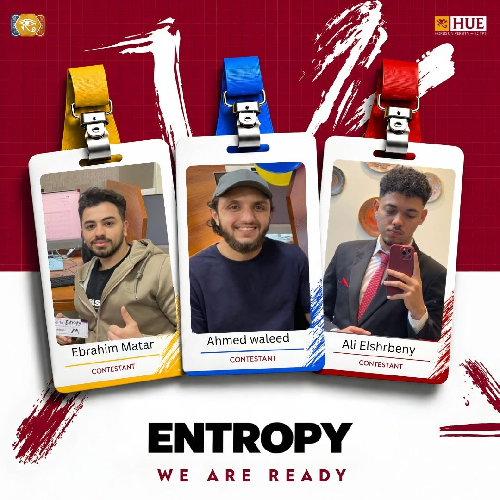
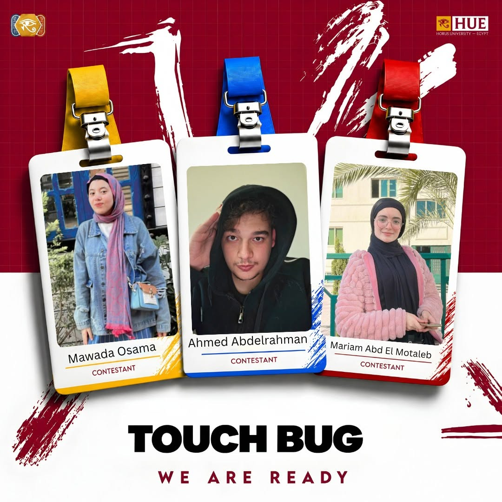
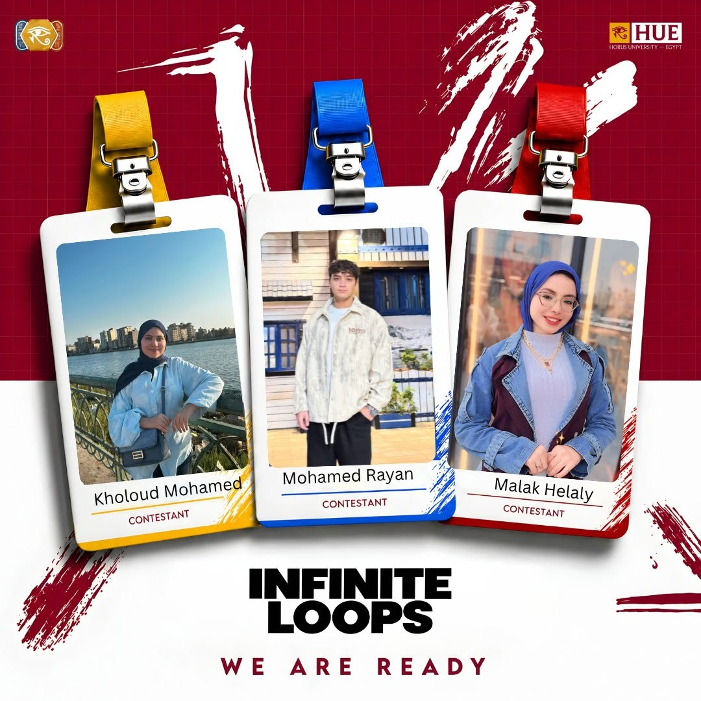
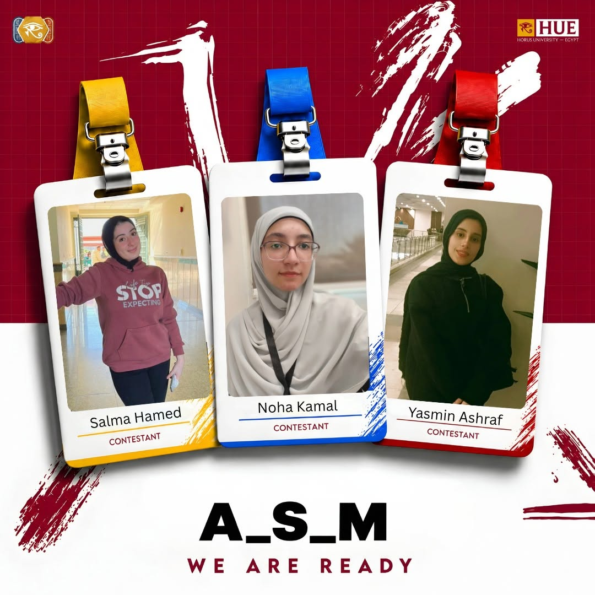
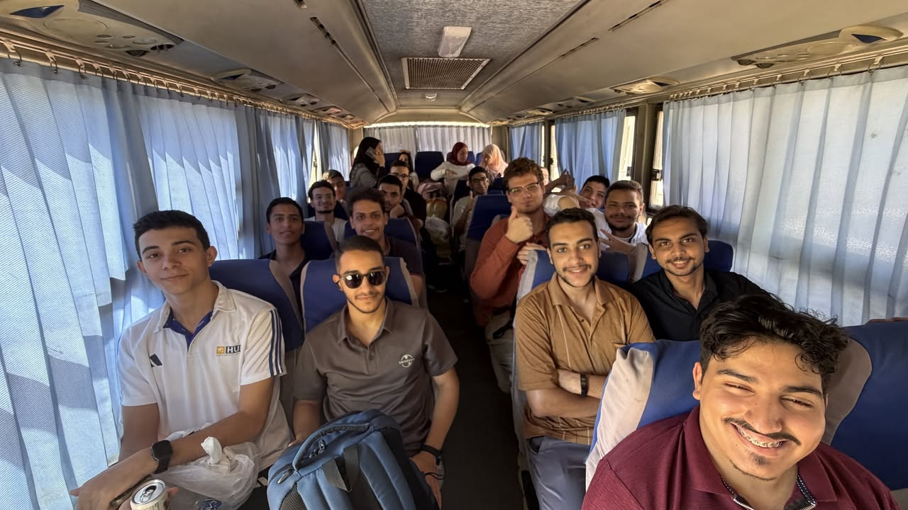
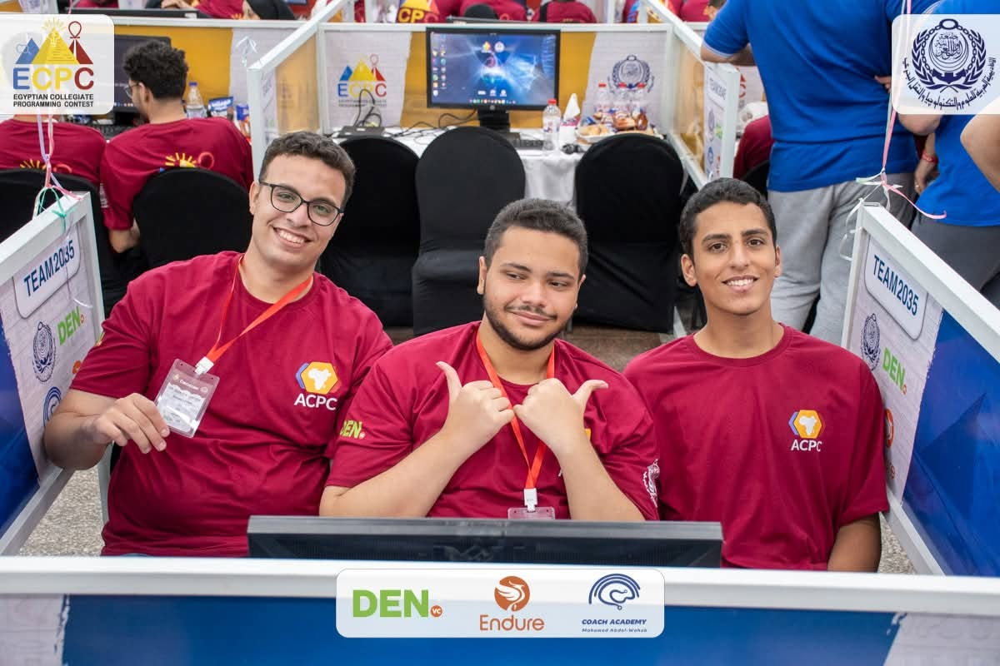

مجتمع ICPC HUE
جامعة حورس — مصر
جامعة حورس — مصر
08 · تصفيات ECPC
لأول مرة جامعة حورس يمثّلها 16 فريق في تصفيات ECPC في الأكاديمية العربية للعلوم والتكنولوجيا والنقل البحري، ومنهم الفرق اللي ICPC HUE درّبها طول الموسم.






| قبلها بشهر | راجعنا الموضوعات المتقدمة بشكل مكثف، وخلّصنا التسجيل الرسمي. |
| التجهيز | طلبنا الباص، وحجزنا سكن للطلاب في إسكندرية، ونظّمنا جدول الرحلة كله. |
| 18 أغسطس | سافرنا من جامعة حورس لإسكندرية، وعملنا نشاطات جماعية للفرق. |
| اليوم اللي بعده | مسابقة تجريبية، وجرّبنا الأجهزة وبيئة المسابقة، واستلمنا تيشيرتات الفرق. |
| يوم التصفيات | المسابقة الرسمية: 12 مسألة في 5 ساعات. |


النتيجة دي معناها إيه؟ أغلب فرقنا بدأت البرمجة التنافسية من الصفر الموسم ده، وأعلى فريق كان ناقصه مسألة واحدة بس ويتأهل للمرحلة اللي بعدها. ده بيأكد إن المنهج شغّال، والخطوة الجاية إننا نبدأ المسابقات التجريبية بنظام الخمس ساعات بدري عشان نتأهل في 2027.